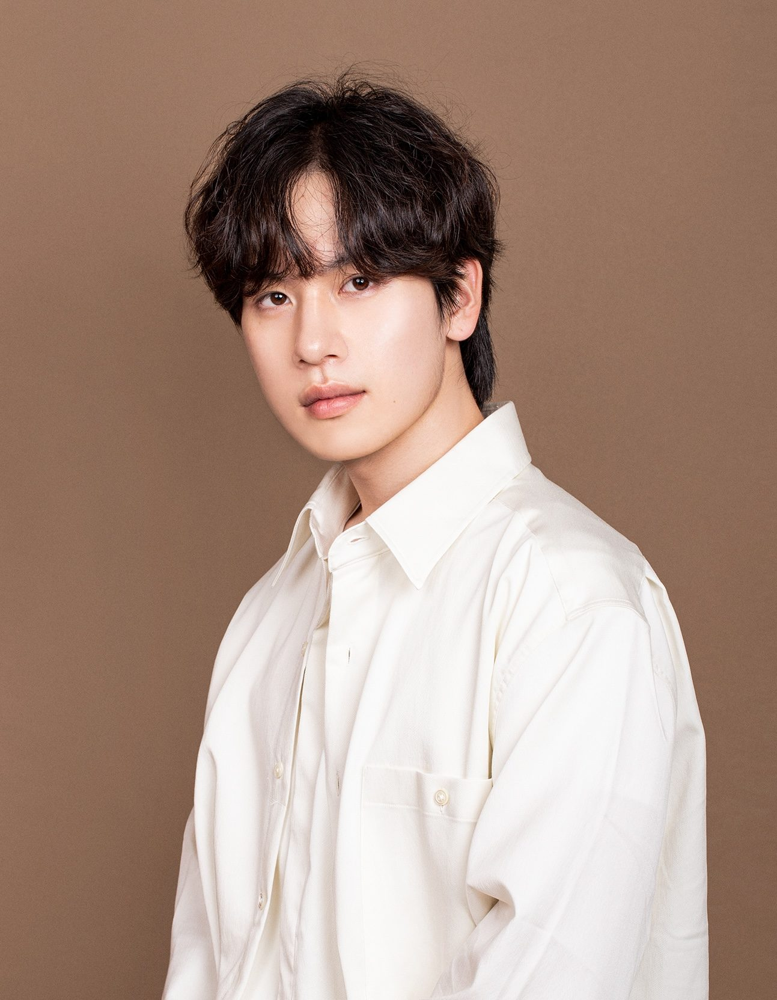
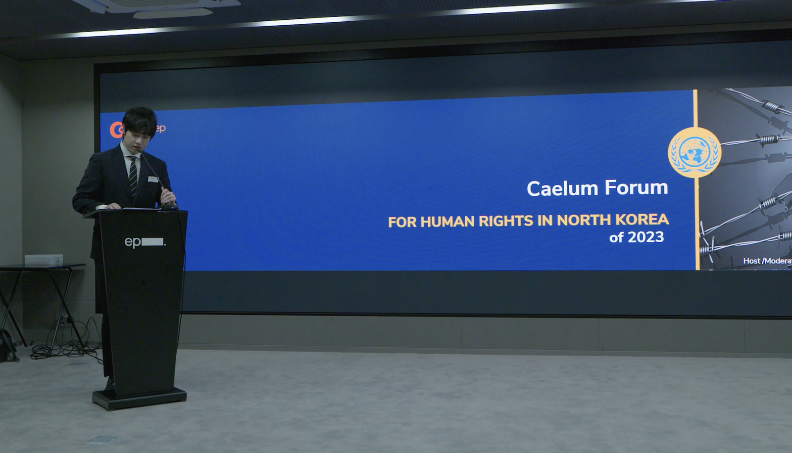
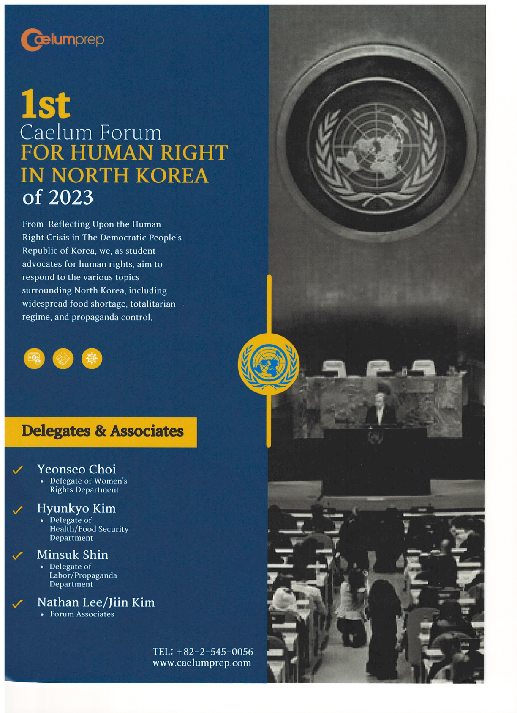
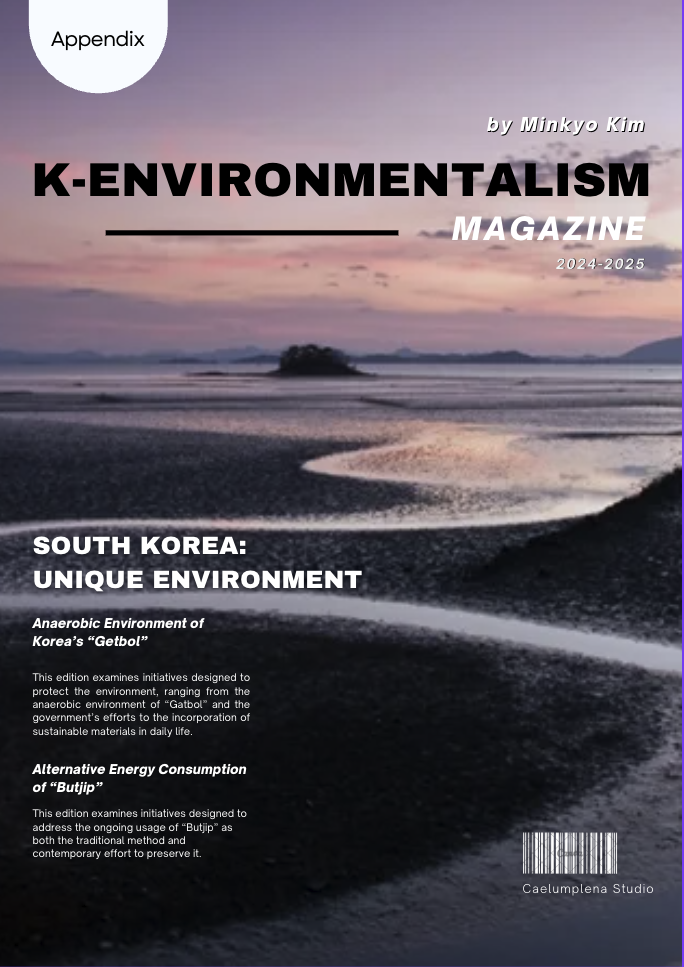
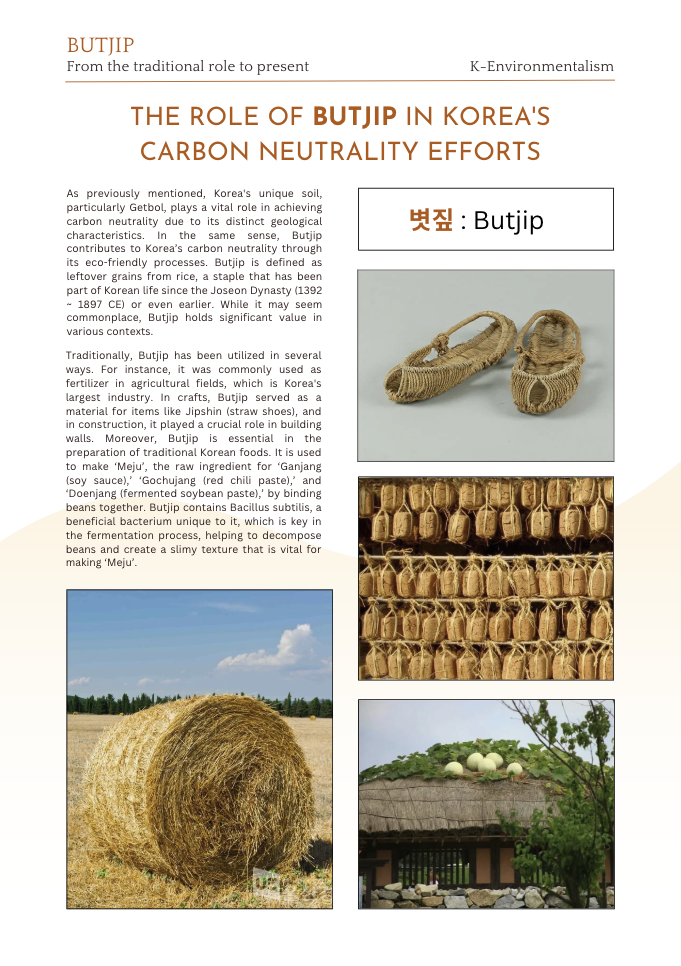
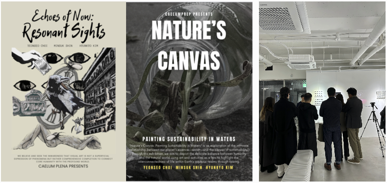
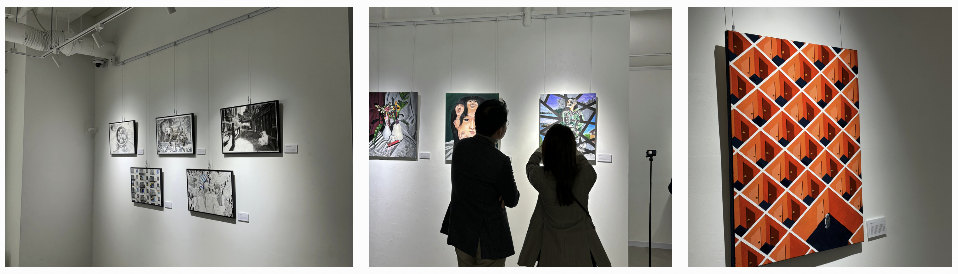
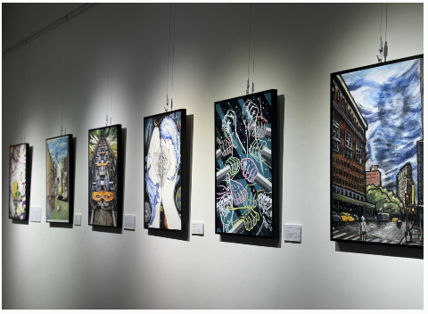

소개
미국 Binghamton University에서 철학을 전공하고, 4년간 교육컨설팅 업계에서 커리큘럼을 개발하고 학생을 지도하는 '설계사'의 역할을 수행해 왔습니다.
추상적이고 모호한 ‘생각’을 언어와 구조, 그리고 전략으로 옮기는 과정에 가장 큰 즐거움을 느낍니다. 또한 인공지능 기술이 가파르게 발전되고 있는 이 시대에 새로운 도메인과 환경에 대응하기 위해 빠르게 학습하고 응용하는 것을 즐깁니다.

PORTFOLIO · 2026
정답이 없는 문제 앞에서 본질을 정의하고, 데이터로 가설을 검증하며, 끝까지 실행해 결과로 증명합니다.
Scroll미국 Binghamton University에서 철학을 전공하고, 4년간 교육컨설팅 업계에서 커리큘럼을 개발하고 학생을 지도하는 '설계사'의 역할을 수행해 왔습니다.
추상적이고 모호한 ‘생각’을 언어와 구조, 그리고 전략으로 옮기는 과정에 가장 큰 즐거움을 느낍니다. 또한 인공지능 기술이 가파르게 발전되고 있는 이 시대에 새로운 도메인과 환경에 대응하기 위해 빠르게 학습하고 응용하는 것을 즐깁니다.
Binghamton University
(State University of New York)
Bachelor of Arts, Philosophy
‘제가 어떤 사람인가’를 가장 잘 보여주는 세 가지 태도입니다.
무엇을 알고 무엇을 모르는지 명확히 파악합니다. 새로운 업무·도메인·기술 환경에서도 빠르게 습득·응용하며, 어떤 상황에도 유연하게 대처합니다.
‘안되면 되게 하라’. 목표를 세우면 여러 방법을 시도하며, 달성하기 전까지 멈추지 않습니다. 제한된 환경일수록 더 집요하게 파고듭니다.
추상적이고 모호한 생각을 언어와 구조로 구현·설계합니다. 형이상학적 개념을 텍스트와 전략으로 풀어내는 것이 저의 가장 큰 강점입니다.
MAIN PROJECT · 2023.03 – 2023.12
“AI의 지수적 성장으로 교육의 의미가 흔들리는 시대, 학생의 ‘강점’을 어떻게 증명할 것인가?”
상담·수업 데이터, 타겟 학교 분석
학생별 강점 기반 차별화 설계
맞춤형 프로젝트 기획·역할 조율
운영·KPI 점검·결과 회고
GPA·시험 점수 등 정량 지표는 충분했지만, 학생만의 개성과 강점을 어필할 요소가 부족했습니다. 동시에 경쟁 교육업체와 차별화된 컨설팅이 필요했습니다.
‘점수’가 아닌 ‘사람’을 보여주는 입시 전략이 필요했습니다.
기획·총괄 리더로서 개별 상담·수업 데이터·타겟 학교를 분석해 학생 개인의 특성을 정의하고, 강점을 극대화하는 맞춤형 프로젝트를 설계했습니다.
Art Director · Communication Director · 교과 교사 간 업무를 조율하고, 결과물의 검수와 학생 개인 지도를 담당했습니다.
두 학생 모두 목표 대학에 합격하며 전략의 유효성을 증명했습니다.
기획자·리더 역량과 디자인·마케팅 프로모션에 대한 이해를 확장했습니다.
정치·사회 분야에 관심, 토론을 즐김 · Economics/Politics 희망
→ UN Forum Speech Project미대 진학 희망 · 운동부(Rowing) 경력을 강점으로
→ K-Environmentalism Exhibition Project‘표현’의 가치를 중심으로 한 커리큘럼 설계.


‘환경’을 키워드로 한 전시·커리큘럼 설계.





목표 관객 30명 중 약 20명 모집에 그쳐 목표 성과 미달. 막연한 SNS 홍보가 아니라, 명확한 Target Audience(난민 이슈에 관심 있는 10~30대, 유학생 학부모 커뮤니티)를 정의하고 그에 맞는 채널·웹사이트 기반 프로모션을 적극 실행했어야 한다고 회고합니다.
→ 데이터 기반 타겟팅의 중요성을 체득했습니다.
EXTRACURRICULAR PROJECT · 2022.01 – 2023.01
“캠퍼스에서 소외된 국제 한인학생의 학교생활의 질을 어떻게 높일 것인가?”
한인 유학생을 위한 학생회가 부재해, 학생 간 소통·신규생 멘토링·행정 소통·문화 이벤트·운영자금·인지도가 모두 비어 있었습니다. 개척자 없는 Zero-to-Ten 환경이었습니다.
인재 섭외 → Constitution 작성 → 로고·브랜딩 → 단·장기 자금 로드맵 → Administration Office 협업 멘토링 체계화 → 카카오 오픈채팅 통합 소통체계 구축 → 타 동아리 협업 K-Culture 이벤트.
정식 학생회로 Chartering 성공(현재까지 운영 중). Instagram 프로모션 체계 확립, U-way 스폰서십 계약으로 안정적 자금조달과 한국문화 확산에 기여.
의사결정에 있어 확고한 소통체계의 중요성을 체감했습니다. 지속가능한 수익모델을 만들며 다양한 분야의 사례를 참조했고, 정량·정성 데이터의 수집과 분석에 대한 학습이 필요함을 깨달았습니다.